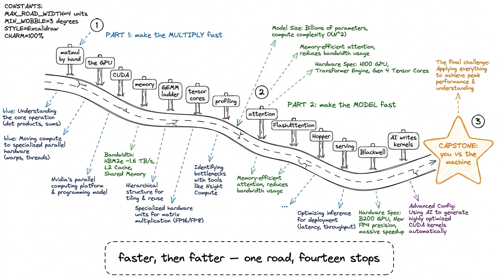
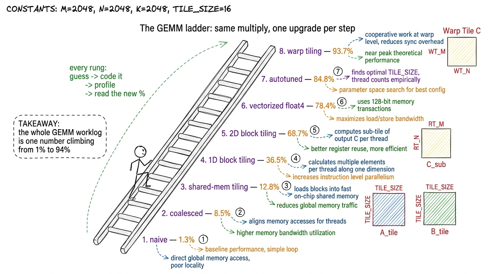
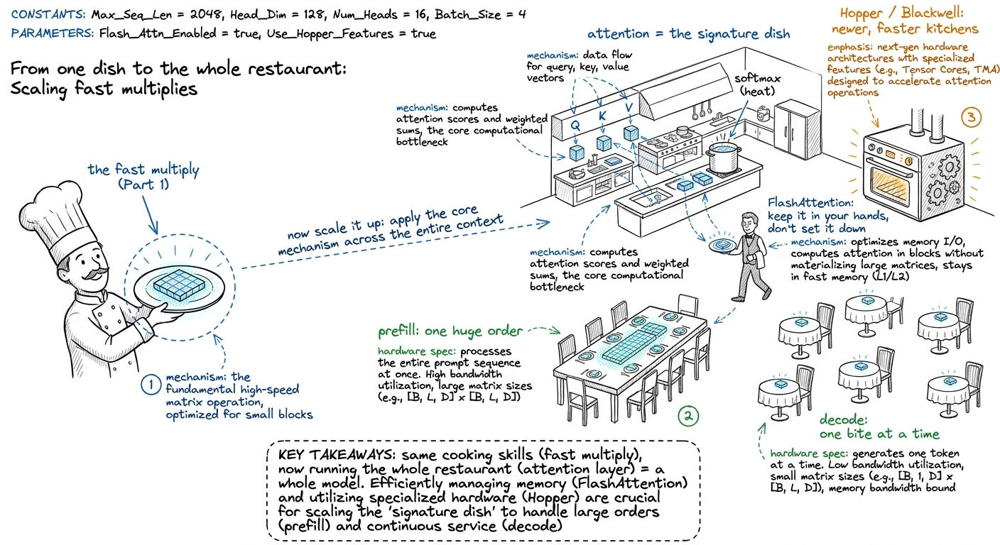
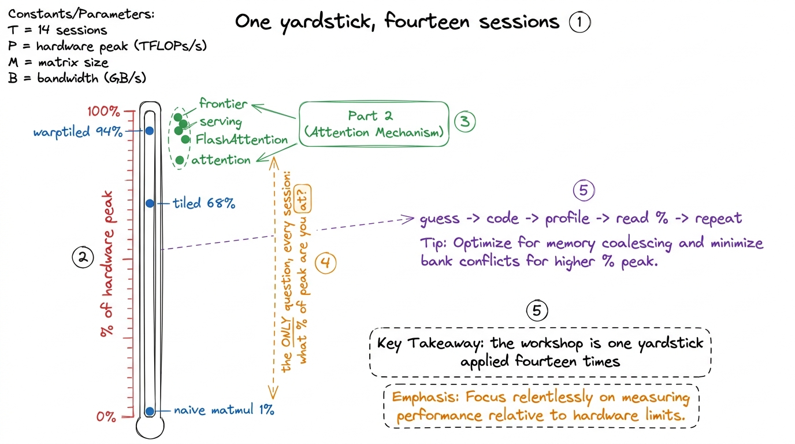

The whole arc: one story, fourteen sessions
By the end of this chapter you can stand up on day one, draw a single map on the whiteboard, and tell the students the whole story of the workshop in five minutes — so that every lecture and every workshop afterward feels like a step on one road they can already see, not a pile of disconnected tricks.
This is the most important chapter for you, the mentor, to own — because a workshop without a spine feels like fourteen unrelated topics, and students quietly drown. With the spine, every session has an obvious "you are here." So before you learn any of the pieces, learn the shape of the whole thing. It is simpler than it looks.
The whole workshop is one sentence
Here is the entire four weeks in one line, and you should write it on the board on day one and leave it there:
First we make the multiply fast. Then we make the model fast.
That's it. Everything — every kernel, every profiler screenshot, every fancy GPU feature — lands in one of those two halves. The first half (roughly the first two weeks) takes the single operation matrix-multiply and drags it from painfully slow to nearly as fast as the hardware allows. The second half (the back two weeks) takes that fast multiply and uses it to make a whole AI model run fast — attention, serving, the newest chips, and even AI that writes kernels for us.

figure rendering · The whole workshop as one road with two halves: make the multiply fastWhy start with the multiply at all
Students often wonder why a whole workshop obsesses over one operation. Here is the answer you give them, and it is the emotional hook of the entire course.
Running a neural network is, almost entirely, matrix multiplication. When you chat with a model, your words become a grid of numbers, and that grid gets multiplied by the model's learned weight-grids, hundreds of times, for every single word it says back. Generating one word is trillions of little multiply-and-add steps. So if you can make the multiply even a little faster, you make all of AI faster — and cheaper, and cooler.
Part 1, step by step: the climb to a fast multiply
Now walk the first half of the road with the students, sign by sign, so each lecture has a home. Keep it a story, not a syllabus.
We start with the multiply itself — by hand, on a receipt, a 2×2 grid of dot products (L-matmul). Then we ask what hardware do we run it on? and meet the GPU: not a smarter chip than your laptop's, just a chip with thousands of tiny simple workers instead of a few clever ones (L-cpu-vs-gpu, L1). Then we learn to talk to those workers — the CUDA programming model: grids, blocks, warps, threads; our first real kernels like vector-add and a colour-to-grey image (L2).
Then comes the twist that runs through everything: the workers are so fast that the real problem is feeding them data fast enough. So we study the memory hierarchy — coalescing, shared memory, bank conflicts (L3). And now we're ready for the heart of Part 1: the GEMM worklog, a ladder of matmul kernels where each rung is a measured speed-up.

figure rendering · The GEMM ladder as a staircase — each rung is one measured optimizatioThe last rung of Part 1 is tensor cores — special hardware on the GPU that does a tiny matmul in a single instruction, blowing past even our best hand-tuned kernel (L6). And to make sure students can improve any kernel and not just ours, we teach them to profile like professionals — reading the GPU's own diagnostic tools to find exactly why a kernel is slow (L7). That closes Part 1: they can take a multiply and make it fly, and they can prove it with numbers.
Part 2, step by step: from a fast multiply to a fast model
Now the road bends. We have a screaming-fast multiply. What do we build with it?
The pivot is attention — the operation at the heart of every modern language model, the thing that lets a model look back over everything you've said (L8). Attention is, wonderfully, made of matmuls plus one softmax. So everything from Part 1 pays off immediately. But naive attention has a nasty habit: it writes a giant grid to slow faraway memory and reads it back, which chokes the GPU. The fix, FlashAttention, is one of the most famous kernels in the world — it does the whole thing in fast on-chip memory without ever writing the giant grid (W1). This is the "aha" of Part 2: the same feed-the-workers logistics from Part 1, now applied to a whole layer.

figure rendering · Part 2 as running the whole restaurant: attention is the dish, FlashAtFrom there Part 2 climbs into the frontier. We do a Hopper deep dive — the H100's newest features, and what it actually takes to beat NVIDIA's own library (W2). We tour the abstraction ladder — higher-level tools like Triton and CUTLASS that write some of the kernel for you, and when you still must drop down to raw CUDA (W3). We study inference-serving kernels — the real machinery behind serving a model to millions: KV-caches, paged attention, quantization (W4). We peek at Blackwell and NVFP4 — the very newest chips and number formats, where one hackathon dragged a kernel from 2000 microseconds down to 22 (W5).
And we finish at the frontier finale: the DeepSeek stack and, the mind-bender, AI that writes kernels — models that propose an optimization, compile it, profile it, and improve — the exact guess-code-profile loop from day one, now run by a machine (W6).
The thread that never breaks: "what % of peak are you at?"
There is one question that runs the entire length of the road, both halves, and you should make it the workshop's catchphrase: "What percentage of the hardware's peak speed are you actually getting?"
Every rung of every ladder is an answer to that question. The naive matmul: 1%. The tuned one: 94%. Naive attention: memory-choked. FlashAttention: much closer to peak. It is the same yardstick from the first day to the last. If a student can always tell you their percentage of peak and why it isn't higher, they have become a kernel engineer.

figure rendering · The single yardstick — percentage of hardware peak — that measures eveHow to actually open the workshop (the 5-minute board plan)
Here is the exact opening you deliver on day one, before any content, to plant the map.
- (1 min) Write the sentence. "First we make the multiply fast. Then we make the model fast." Leave it up all four weeks.
- (1 min) The hook number. 1000×1000 = a billion multiply-adds; a model does far more, per word; the whole AI economy pays for this loop. This is why we care.
- (2 min) Draw the road. Sketch the two-halves map. Name the milestones out loud but do not explain them — just let students see how many stops there are and that they connect.
- (1 min) The yardstick. "There is one question all four weeks: what percentage of peak are you at? You'll answer it with the loop — guess, code, profile, read the number, repeat." Draw the little loop.
1 The curriculum splits into 8 foundational live lectures (L1–L8) and 6 deep-dive workshops (W1–W6), often interleaved week by week. You don't need students to memorize that structure — the two-halves road is the mental model that matters. The L/W numbering is your bookkeeping, not theirs.
You can now teach
- The one-sentence spine of the entire workshop — "first make the multiply fast, then make the model fast" — and how to write it on the board so it anchors all four weeks.
- Why we obsess over one operation: the billion-multiply-add hook and the fact that the whole AI economy runs on this loop.
- Part 1 as a climb — matmul → GPU → CUDA → memory → the GEMM ladder → tensor cores → profiling — told as one home-renovation montage where a number climbs from 1% to 94%.
- Part 2 as running the whole restaurant — attention → FlashAttention → Hopper → serving → Blackwell → AI-that-writes-kernels — reusing every Part 1 skill at model scale.
- The single yardstick — "what % of peak are you at?" — and the guess→code→profile→repeat loop that answers it in every session.
- The 5-minute day-one opening and the "you are here" pointing habit that keeps a fourteen-session cohort from ever losing the thread.